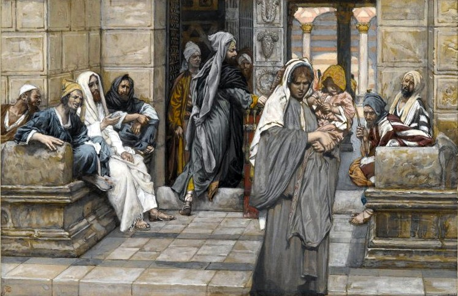
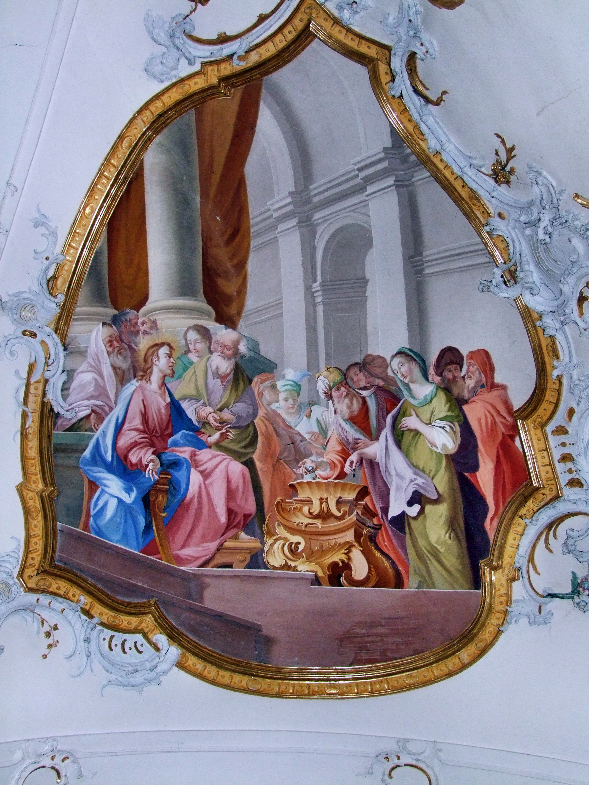
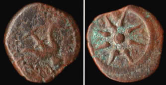
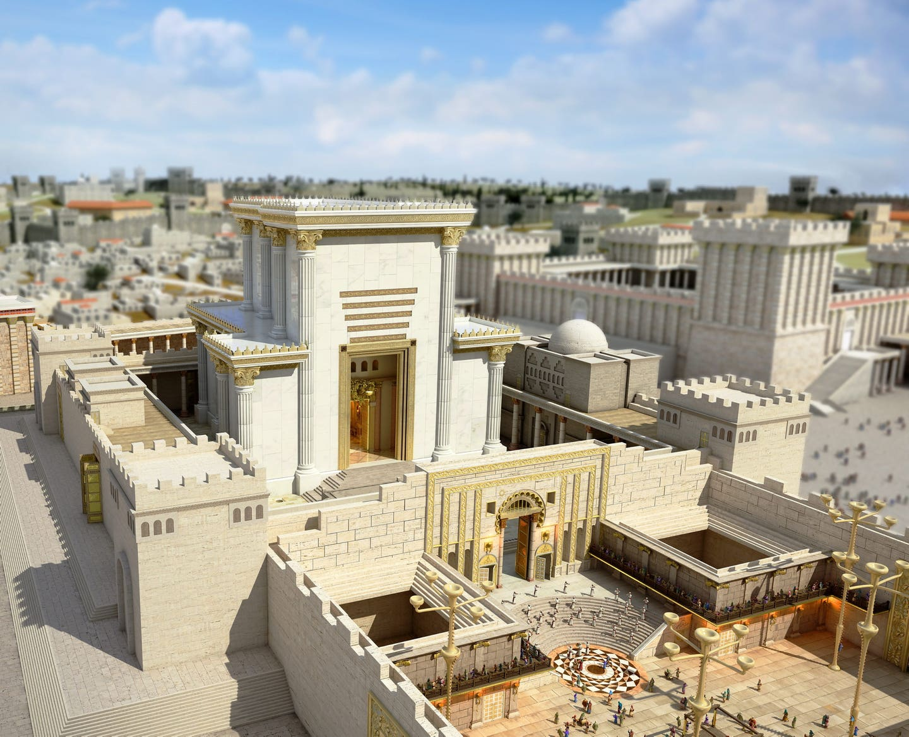
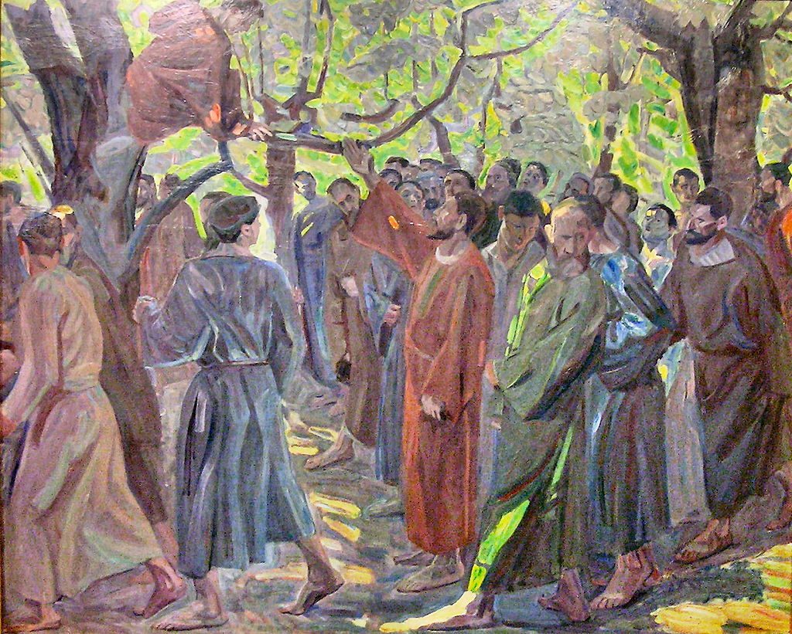

누가 과부들의 집을 집어삼켰나 - 누가복음 20장~21장 이야기
게시: 2020-12-24T06:30:12+09:00
누가복음 21장에 나오는 가난한 과부의 헌금에 대한 이야기를 다들 아실 겁니다. 부자들이 두둑한 헌금을 낼 때, 가난한 과부가 동전 두개를 내는 것에 대해 예수님께서 칭찬을 하셨다는 것이지요. 우리나라 목사님들이 건축헌금 걷을 때 특히 자주 인용하시는 구절이기도 합니다. 그러나 과연 예수님이 그 과부의 헌금을 칭찬하신 것일까요? 성경 번역이 너무 딱딱해서, 저 나름대로 예수님께서 실제로 쓰셨을 것 같은 구어체로 풀어썼습니다. 제가 읽은 바로는, 결코 예수님께서는 귀족들에게 어울리는 점잖빼고 엄숙한 선생님이 아니라 가난한 서민들에게 그들의 언어로 말씀하신, 유머 감각이 풍부한 연설가셨다고 합니다.

(누가복음 21장 가난한 과부의 두 렙돈 이야기를 그린 그림입니다. Jacques Tissot의 그림입니다. 자끄 티소는 나중에 런던으로 옮겨가 활약하며 이름을 James Tissot로 바꾸었습니다.)
누가복음 20장 45절 ~ 21장 6절 사람들이 듣는 가운데, 예수님께서 그의 제자들에게 말씀하셨습니다. "율법학자들 가까이 하지마. 걔들이 좋아하는 건 멋진 옷을 입고 으시대며 걷는 것과 사람들이 시장에서 자기들에게 굽신거리며 인사하는 것, 그리고 회당과 연회 자리에서 상석에 앉는 거야. 걔들은 장황한 기도를 늘어놓고는 과부들의 집을 꿀꺽해버려. 그딴 놈들 가만 둬서는 안돼." 예수님께서 눈을 들어 보시니 부자들이 성전 헌금함에 헌물을 놓고 있었습니다. 마침 어떤 가난한 과부가 두 개의 구리 동전을 넣는 것을 보고 예수님께서 말씀하셨습니다. "야 솔까말 (Truly I tell you), 저 가난한 과부가 다른 사람들보다 훨씬 더 큰 돈 낸거야. 가진 거 많은 사람들은 재산의 일부만 내놓은 거지만 저 여자는 먹고살 전재산을 다 넣었쟎아." 그의 제자들 중 몇몇이 성전이 아름다운 석재와 신께 바친 헌물로 장식된 것에 대해 감탄하며 이야기하고 있었습니다. 하지만 예수님께서 말씀하셨습니다. "야, 니들이 보는 저것들이 모조리 허물어질 날이 올거야. 돌 한개도 똑바로 서있지 못할 거라구."

(이것도 누가복음 21장의 과부를 그린 프레스코 화인데, 독일 바이에른의 Ottobeuren 성당의 벽에 그려진 것입니다.)
이 구절은 마가복음 12장 38절부터 13장 2절까지 이 순서 그대로 또 나옵니다. 즉, 예수님께서는 율법학자들이 장황한 기도로 사람들을 현혹한 뒤에 가난한 이들의 전재산을 가로채는 행위를 비난하신 뒤에 과부가 전재산을 바치는 것에 대해 언급하신 것입니다. 특히 예수님께서는 과부가 넣은 동전 두개에 대해 "all she had to live on", 즉 생계를 유지할 전재산을 바쳤다고 말씀을 하셨습니다.

(이것이 당시 유대 지역에서 통용되던 화폐 중 가장 작은 단위의 구리 동전인 렙돈(lepton)입니다. 두 렙돈은 대략 지금 우리 화폐로 1천원 정도라고 합니다.)
이 전재산을 바친 과부는 그날 저녁에 무엇을 먹었을까요? 하나님께서 전재산을 바친 그 정성을 갸륵하게 여기셔서 하늘에서 만나와 메추라기를 내려주셨을까요? 글쎄요. 성경에도 명백히 씌여 있지만, 세상에서 일어나는 모든 일은 하나님의 뜻에 의해 일어나는 것입니다. 굳이 기독교인이 아니더라도 전지전능하신 신이라는 존재 자체를 믿는다면 이론적으로도 이 우주에서 일어나는 모든 일은 이미 신께서 다 알고 계시고 다 의도하신 것이라는 것을 아실 겁니다. 전지전능이라는 것이 바로 그런 뜻이니까요. 그런 점에서 코로나-19가 기승을 부리는 현재의 고난도 분명히 하나님의 뜻에 의해 일어나고 있는 일입니다. 많은 목사님들이 코로나 바이러스, 아니 우한 바이러스를 물러나게 하여 다시 교회에 모여 예배를 볼 수 있게 해주십사 하나님께 기도를 올립니다만, 하나님께서 그런 일에 대해서는 기적을 베풀지 않고 계십니다. 아마 목사님들의 믿음이 강하지 않아서 그럴까요? 저는 아마 하나님께서는 선량한 시민들의 방역 협조와 과학자들의 백신을 통해 인류를 구원하실 거라고 믿습니다. 굳이 하나님의 기적이 또 일어날 필요는 없지 않을까요? 그런 의미에서, 저는 과부의 손에 두 개의 동전이라도 들어왔던 것이 하나님의 뜻이라고 봅니다. 그런데 인간의 탐욕은 끝이 없어서, 그런 가난한 사람으로부터 그런 동전 두개까지도 뽑아내기도 합니다. 예수님께서 누가복음 20장 마지막 구절에서 '과부들의 집을 집어삼키는 율법학자들'을 맹비난하신 것이 바로 그것입니다. 그게 아니다, 저건 성전에 건축 헌금으로 전재산을 바치는 과부를 칭찬하신 것이 맞다고 주장하시는 분들도 많을 것입니다. 그러나 바로 다음에 나오는 예수님 말씀이, 그런 헌금으로 아름답게 장식된 성전이 산산조각이 나서 다 흩어져 버릴 거라는 예언인 것은 어떻게 해석을 해야 할까요?

(예수님께서 돌 하나도 서있지 못할 것이라고 악담을 하신 예루살렘 성전은 제2 성전이라고 하는 것으로서, 바빌론 유수에서 돌아온 유대인들이 세운 것입니다. 예수님의 예언대로 예루살렘 성전은 로마에 의해 파괴되었고 지금은 이렇게 가상공간 세상에서만 아름답게 서있습니다. 하나님의 공의는 웅장한 건축물이 아니라 우리들의 마음 속에 서는 것입니다.)
예수님께서는 짧은 공생애 동안 일관적으로 '돈과 하나님을 동시에 섬길 수 없으며 너희는 선택을 해야 한다' 라고 가르치셨고, 유일하게 폭력을 쓰신 대상이 바로 종교를 이용해서 돈을 버는 자들이었습니다. 예수님이라면 어렵게 사는 사람들이 모은 돈으로 아름다운 교회를 세우라고 하셨을까요, 착한 사마리아인처럼 어려운 이웃을 도우라고 하셨을까요? 예수님께서 구원 받았다고 선언하신 사람은 건축 헌금을 낸 사람이었을까요, 빈민들에게 재산을 나눠준 사람이었을까요?

(돌무화과나무, 즉 sycamore-fig tree에 올라가 예수님을 보고자 한 여리고 지방의 세리장 삭개오입니다. 당시 세리라는 것은 단순한 세무 공무원이 아니라 할인 금액으로 로마제국에게 세금을 대납하고 동포들로부터는 원금 그대로의 세금을 뜯어내는 방식으로 큰 돈을 번 일종의 깡금융 용역업자였었습니다.)
누가복음 19장 5~10절
예수님께서 그 자리에 오셔서 올려다보고는 그에게 말씀하셨습니다.
"삭개오(Zacchaeus)야, 빨랑 내려와. 오늘 밤 니네 집에서 신세 좀 지자."
그러자 삭개오는 즉각 나무에서 내려와 기쁘게 예수님을 영접했습니다. 모든 사람들은 예수님이 로마제국을 위해 동포들을 쥐어짜는 비열한 친일파 세리인 그의 집에서 묵겠다는 것을 보고 놀라 웅성거렸습니다.
"저 양반이 친일파 죄인과 어울리네 !"
그러나 삭개오는 그 자리에서 일어나 주님께 말했습니다.
"주님, 보십쇼 ! 제가 당장 가진 재산의 절반을 빈민들에게 나눠주겠습니다. 제가 세금 징수 업무를 하면서 누구든 속인 바가 있다면 그렇게 취득한 금액의 4배를 배상하겠습니다 !"
예수님께서 그에게 말씀하셨습니다.
"오늘 이 집안이 구원을 받았어. 이 인간도 아브라함의 자손이거든. 사람의 아들인 내가 와서 길잃은 자를 구원했다구."
** 크리스마스를 맞이하여 사랑을 나눕시다. 아마도 하나님께서 코로나-19라는 시련을 보내신 이유는, 가난한 사람들이 더 큰 고통을 받는 이런 코로나 상황에서 우리가 어떻게 행동하는지 보시려고 하신 것 아닌가 하는 생각도 듭니다.
Source : en.wikipedia.org/wiki/Lesson_of_the_widow%27s_mite